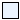
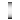

Additional icons used in package FMITest
Extends from Modelica.Icons.Package (Icon for standard packages).
| Name | Description |
|---|---|
|  PartialElectricalAdaptorIcon | Basic graphical layout of an adaptor block from a physical to input/output connectors |
|  PartialMechanicalAdaptorIcon |
Basic graphical layout of an adaptor block from a physical to input/output connectors
Block that has only the basic icon for an input/output, Boolean block (no declarations, no equations) used especially in the Blocks.Logical library.